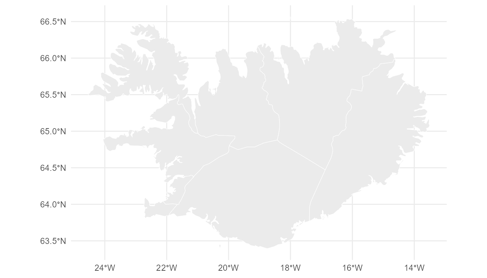

Building a Geoscale from Natural Earth
Source:vignettes/from-naturalearth.Rmd
from-naturalearth.RmdThe package ships no maps
geoscales contains integration code, not data. There is
no data/ directory and no bundled boundaries. A provider
fetches a source table; the package records what was fetched.
list_geo_providers()
#> name desc
#> 1 naturalearth Natural Earth admin-0/admin-1 (rnaturalearth)Natural Earth is the default provider because its country table is
already a wide leaves table — one sf object
carries the whole nest as columns:
continent (8) -> region_un -> subregion (22) -> sovereignt
-> admin / adm0_a3 (177) -> geounit -> subunitwith pop_est and gdp_md as ready-made
weights.
gs <- ne_geoscale(scale = 110)
gs
#> Geoscale: naturalearth-110
#> Description: Natural Earth admin-0 hierarchy
#> Levels (4, coarsest first):
#> - continent (8)
#> - subregion (22)
#> - country (177)
#> - feature (177)
#> Atoms: 177
#> Weights: pop_est, gdp_md (default: pop_est)
#> Source: naturalearth
#> Geometry: attached (177 features)Aggregating up
We will follow Iceland through the hierarchy. It sits in Northern Europe:
lf <- S7::prop(gs, "leaves")
lf[lf$country == "ISL", c("continent", "subregion", "country", "pop_est")]
#> continent subregion country pop_est
#> 145 Europe Northern Europe ISL 361313Rolling population up from countries to sub-regions is one call.
rule = "sum" because population is extensive — it
adds up:
pop <- data.frame(country = lf$country, pop = lf$pop_est)
pop <- pop[!is.na(pop$country), ]
agg <- recast_geoscale(pop, gs, from = "country", to = "subregion", rule = "sum")
agg[agg$subregion == "Northern Europe", ]
#> subregion pop
#> 13 Northern Europe 105135601… and back down
The same verb runs the other way. Going down,
rule = "sum" splits a total in proportion to a weight, so
the total is conserved:
ne <- agg[agg$subregion == "Northern Europe", ]
back <- recast_geoscale(ne, gs, from = "subregion", to = "country",
rule = "sum", weight = "pop_est")
head(back[order(-back$pop), ], 4)
#> country pop
#> 4 GBR 66834405
#> 10 SWE 10285453
#> 1 DNK 5818553
#> 3 FIN 5520314Because we split by the same quantity we aggregated, the round trip is exact:
That is the whole idea: aggregation and disaggregation are
one operation. Direction follows the level ranks, and
recast_geoscale() routes through the atom layer either
way.
Iceland’s own regions
Natural Earth’s admin-1 layer gives sub-country units. This needs
rnaturalearthhires, which is not on
CRAN:
install.packages("rnaturalearthhires",
repos = "https://ropensci.r-universe.dev")
s <- ne_source(level = "states", country = "Iceland")
d <- as.data.frame(s)
nrow(d)
#> [1] 9Nine units — but Iceland has eight regions. Reykjavik
and the surrounding capital area are separate admin-1 features that
belong to the same region, which Natural Earth records in
gn_name. That gives a genuinely ragged
hierarchy: one group with two children, seven with one.
isl <- data.frame(
country = "ISL",
landshluti = d$gn_name, # Iceland's eight regions
unit = d$iso_3166_2, # the nine Natural Earth units
stringsAsFactors = FALSE
)
g <- geoscale_from_leaves(isl, levels = c("country", "landshluti", "unit"),
key = "unit", name = "iceland")
g <- attach_geometry_geoscale(g, s, by = "iso_3166_2", level = "unit")
g <- add_area_geoscale(g, name = "km2")
g
#> Geoscale: iceland
#> Levels (3, coarsest first):
#> - country (1)
#> - landshluti (8)
#> - unit (9)
#> Atoms: 9
#> Weights: km2 (default: km2)
#> CRS: WGS 84
#> Geometry: attached (9 features)No level is called region here:
geoscale_from_leaves() uses that name for the internal atom
key, so it is reserved for the finest level.
The Capital Region is the one that has two units under it:
geoscale_children(g, "landshluti", "Hofudborgarsvadi")
#> [1] "IS-0" "IS-1"
geoscale_nests(g, "landshluti", "unit")
#> [1] TRUEUp: units to regions to country
set.seed(1)
x <- data.frame(unit = geoscale_regions(g, "unit"),
generation = round(runif(9, 50, 500)))
recast_geoscale(x, g, from = "unit", to = "landshluti", rule = "sum")
#> landshluti generation
#> 1 Austurland 169
#> 2 Hofudborgarsvadi 600
#> 3 Nordurland Eystra 333
#> 4 Nordurland Vestra 347
#> 5 Sudurland 217
#> 6 Sudurnes 308
#> 7 Vestfirdir 475
#> 8 Vesturland 454
recast_geoscale(x, g, from = "unit", to = "country", rule = "sum")
#> country generation
#> 1 ISL 2903
sum(x$generation)
#> [1] 2903Down: a national total split by area
tot <- data.frame(country = "ISL", demand = 1000)
dd <- recast_geoscale(tot, g, from = "country", to = "unit",
rule = "sum", weight = "km2")
dd[order(-dd$demand), ]
#> unit demand
#> 9 IS-8 243.839793
#> 7 IS-6 218.218704
#> 8 IS-7 209.284719
#> 6 IS-5 123.058147
#> 5 IS-4 93.745309
#> 4 IS-3 93.738848
#> 3 IS-2 8.612705
#> 2 IS-1 6.034461
#> 1 IS-0 3.467314Look at what that produces. The Capital Region units receive almost
nothing, because they are tiny — yet they hold most of Iceland’s
population and would consume most of its electricity. Area is
rarely the right weight for demand. This is precisely why
recast_geoscale() makes you name a weight =
rather than picking one for you; with a population column on the leaves
you would pass that instead.
An intensive quantity must not be summed at all — use
weighted_mean, which copies going down and weight-averages
going up:
cf <- data.frame(unit = geoscale_regions(g, "unit"),
cf = round(runif(9, 0.2, 0.5), 3))
recast_geoscale(cf, g, "unit", "landshluti", rule = "weighted_mean", weight = "km2")
#> landshluti cf
#> 1 Austurland 0.219000
#> 2 Hofudborgarsvadi 0.348207
#> 3 Nordurland Eystra 0.498000
#> 4 Nordurland Vestra 0.415000
#> 5 Sudurland 0.262000
#> 6 Sudurnes 0.253000
#> 7 Vestfirdir 0.349000
#> 8 Vesturland 0.431000Geometry follows the levels
geoscale_geometry() dissolves the atoms up to whatever
level you ask for, so the nine units become eight regions:
shp <- geoscale_geometry(g, level = "landshluti")
nrow(shp)
#> [1] 8
geoscale_plot(g, level = "landshluti")
Other providers
The same interface accepts any source. Register one with
register_geo_provider(), or pass an sf object
straight to geoscale_from_provider(). Natural candidates
are giscoR (authoritative NUTS for Europe),
geodata/GADM (admin-2 and admin-3 — note its licence
forbids commercial use) and tigris (US Census).